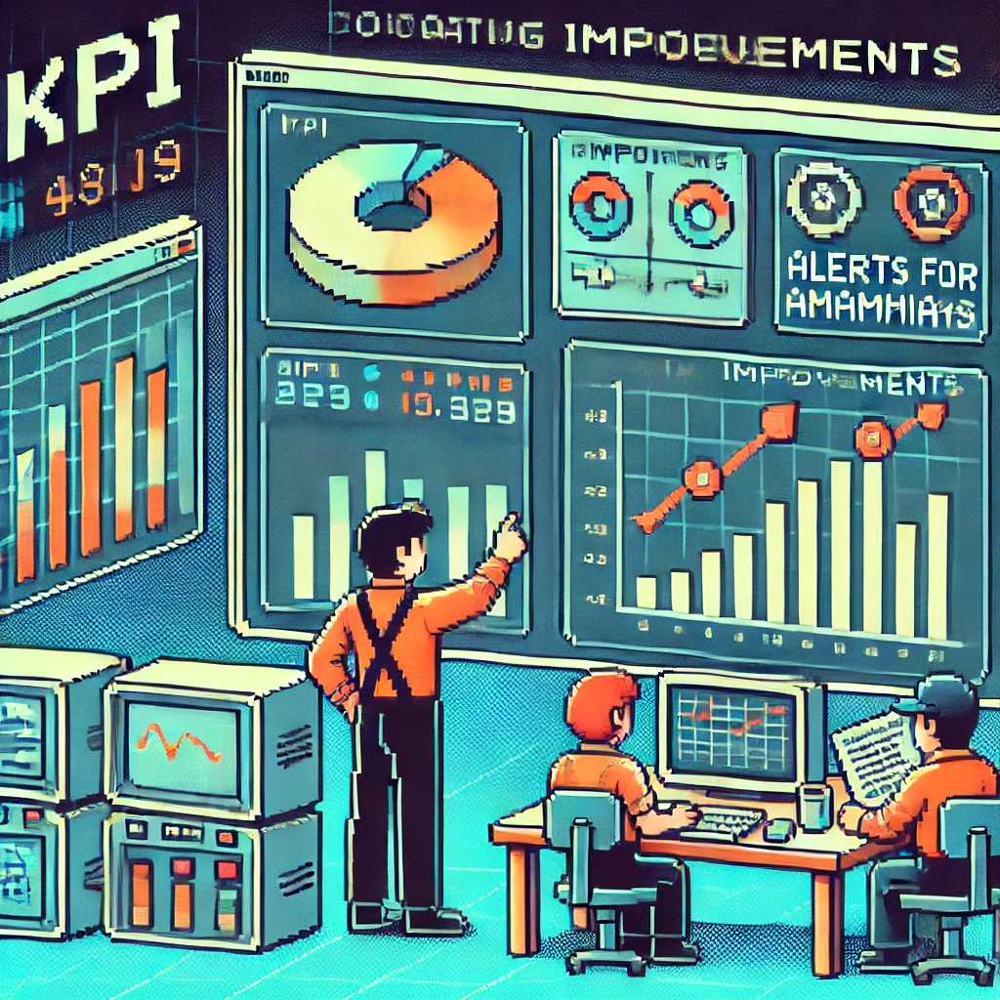

Optimisation de la Qualité des Archives
Objectif
Participation à un projet d'analyse de données en équipe visant à créer un rapport Spotfire personnalisé. J'ai contribué à la définition précise des besoins et maintenu une communication étroite avec les data analysts tout au long du développement pour garantir que le livrable final réponde parfaitement aux attentes des utilisateurs métier.
Documents
Technologies
Spotfire
WMS
Excel
Compétences acquises
- Analyse et traitement de données
- Gestion de projet en équipe
- Communication avec les parties prenantes
- Maîtrise des outils de Business Intelligence